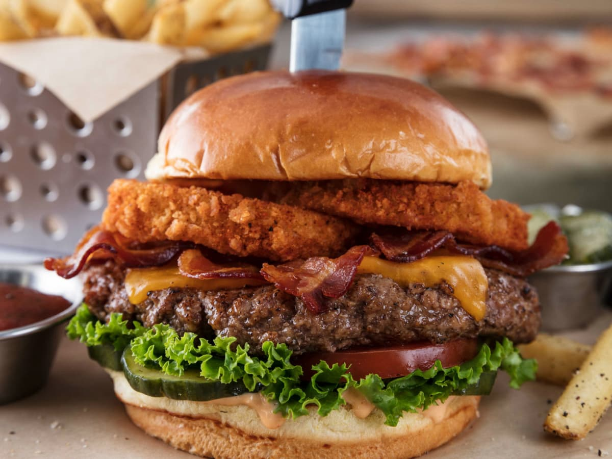
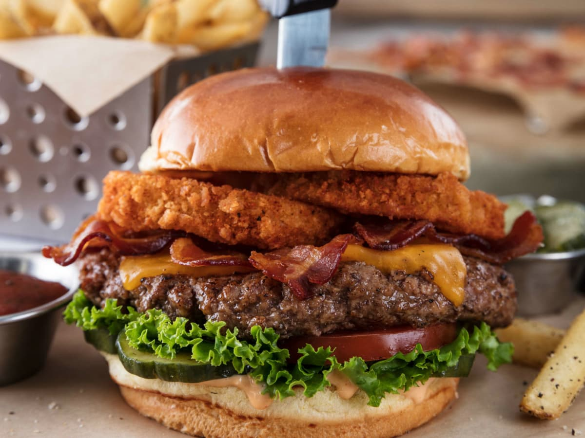
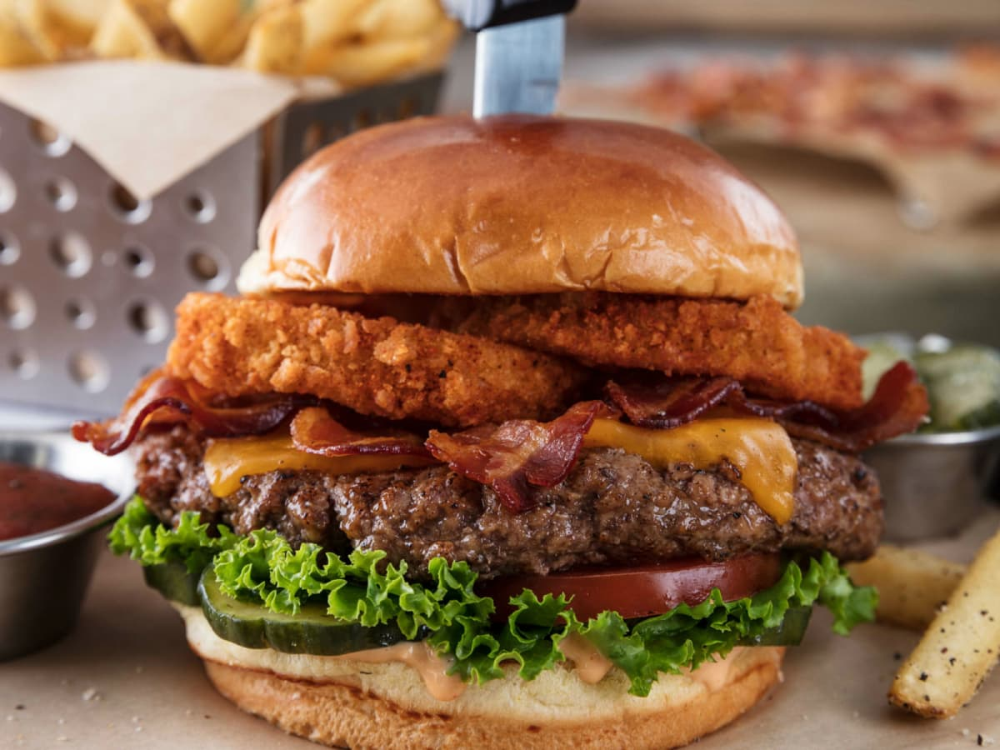

American Restaurant
 

American Restaurant

Ingredients: Mushroom Swiss Burger*
There’s so mush-room in our hearts for this one. Topped with sauteed onions, mushrooms, Swiss, lettuce, tomato & garlic aioli.
The Boss Burger*
The burger all other burgers report to. Smoked brisket, tender rib meat, jalapeno-cheddar smoked sausage, bacon & cheddar with lettuce, tomato, House BBQ & house-made ranch. We. Dare. You.
Black Bean & Veggie Fajitas
Black bean patty, asparagus, garlic-roasted tomatoes, onions, bell peppers, corn & black bean salsa, queso fresco, and avocado, drizzled with spicy chile-lime sauce.